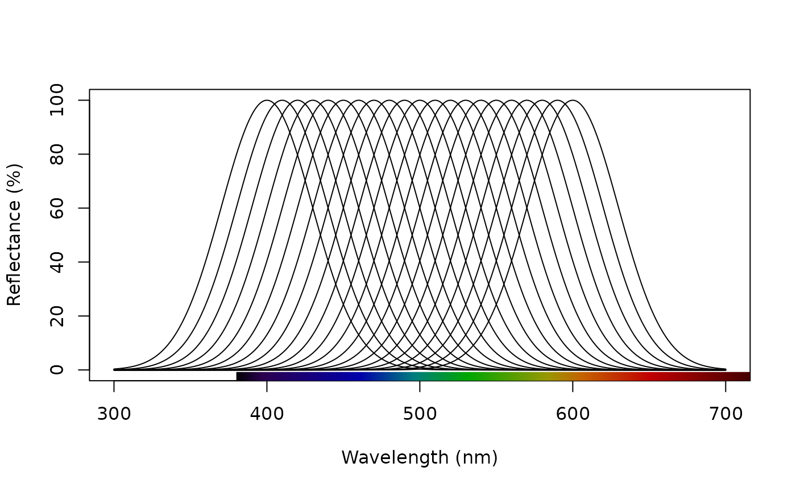
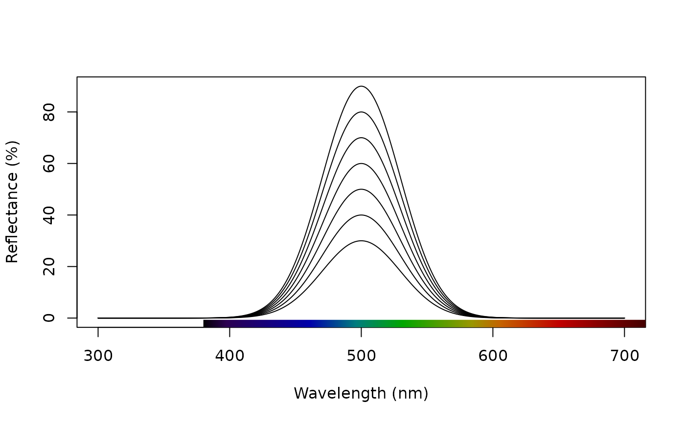
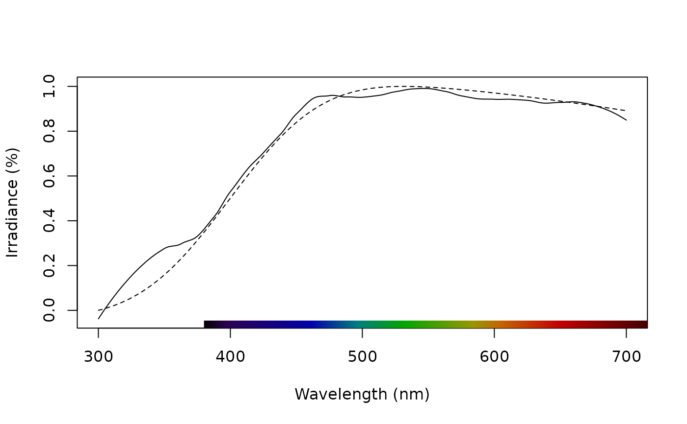

Simulate a naturalistic reflectance, radiance, irradiance, or transmission spectrum. Curves may have sigmoidal (s-shaped) and/or Gaussian (bell-shaped) features. Multiple Gaussian and sigmoidal curves can be combined in a single spectrum, to simulate more complex spectral functions.
Arguments
- wl_inflect
A numeric vector specifying the wavelength location (in nm) for one or more inflection point(s) for a 'sigmoid' shaped curve, if desired.
- wl_peak
A numeric vector specifying the wavelength location (in nm) for one or more inflection point(s) for a 'Gaussian' (or 'bell') shaped curve, if desired.
- width_sig
A numeric value or vector (if multiple wl_inflect values are specified) specifying the steepness of the change, for any sigmoidal curve(s). Required when
wl_peakis specified. Defaults to 20 nm.- width_gauss
A numeric value or vector specifying the the full-width at half-maximum of any Gaussian curve(s). Required when
wl_peakis specified. Defaults to 70 nm.- skew_gauss
Skewness parameter for controlling the direction and magnitude of skew, when simulating for Gaussian curves (ignored when simulating only sigmoidal curves). Curves will have no skew when
skew_gauss = 0(default), right skew whenskew_gauss > 0, and left skew whenskew_gauss < 0. The parameter corresponds to 'alpha' in the the skew-normal distribution (Azzalini 1985).- xlim
A vector specifying the wavelength range of the simulated spectra. Defaults to 300-700nm (
c(300, 700)).- ylim
A vector specifying the minimum and maximum reflectance values of the resulting curve. Defaults to 0 - 100 % (
c(0, 100)). Note: sigmoidal curves, by default, move from low to high reflectance. But if high-to-low sigmoidal curves are desired this can be controlled by the ordering of the values given toylim(). E.g.c(0, 100)will generate a low-to-high sigmoidal curve, whereasc(100, 0)will generate a high- to-low curve. The ordering of values has no effect on the Gaussian portions of the final curve.
References
Azzalini A (1985). A class of distributions which includes the normal ones. Scan. J. Stat. 171-178.
Examples
# Single ideal 'grey' reflectance spectrum, with 50% reflectance across 300 - 700 nm.
reflect0 <- simulate_spec(ylim = c(0, 50))
# Single sigmoidal spectrum, with a low-to-high inflection at 550 nm.
reflect1 <- simulate_spec(wl_inflect = 550)
# Single Gaussian spectrum, with a peak at 400 nm
reflect2 <- simulate_spec(wl_peak = 400)
# Combination of both Gaussian (with peak at 340 nm) and sigmoidal (with inflection
# at 560 nm)
reflect3 <- simulate_spec(wl_inflect = 560, wl_peak = 340)
# Double-Gaussian peaks of differing widths
reflect4 <- simulate_spec(wl_peak = c(340, 560), width_gauss = c(12, 40))
# Complex spectrum with single sigmoidal peak and multi-Gaussian peaks
reflect5 <- simulate_spec(wl_inflect = 575, wl_peak = c(340, 430), width_gauss = c(20, 60))
# Simulate a set of Gaussian reflectance curves with peaks varying between 400-600nm
# in increments of 10, then combine into a single rspec object, and plot the result
peaks <- seq(400, 600, 10) # Peak locations
reflectances <- lapply(peaks, function(p) simulate_spec(wl_peak = p)) # Simulate
reflectances <- Reduce(merge, reflectances) # Combine
plot(reflectances) # Plot

# Simulate a set of Gaussian reflectance curves with a single peak at 500 nm, but
# with maximum reflectance varying from 30 to 90% in 10% increments, then combine
# into a single rspec object, and plot the result
ymax <- lapply(seq(30, 90, 10), function(x) c(0, x)) # Varying reflectance maxima
reflectances2 <- lapply(ymax, function(x) simulate_spec(wl_peak = 500, ylim = x)) # Simulate
reflectances2 <- Reduce(merge, reflectances2) # Combine
#> Warning: column names ‘spec_p500.x’, ‘spec_p500.y’ are duplicated in the result
#> Warning: column names ‘spec_p500.x’, ‘spec_p500.y’ are duplicated in the result
#> Warning: column names ‘spec_p500.x’, ‘spec_p500.y’, ‘spec_p500.x’, ‘spec_p500.y’ are duplicated in the result
#> Warning: column names ‘spec_p500.x’, ‘spec_p500.y’, ‘spec_p500.x’, ‘spec_p500.y’ are duplicated in the result
plot(reflectances2) # Plot

# To simulate non-reflectance spectra (like irradiances or radiances), it's often useful
# to explore more 'extreme' parameters. Here's a simple example which simulates
# natural daylight, as represented by the D65 standard daylight spectrum.
D65_real <- procspec(sensdata(illum = "D65"), opt = "smooth") # Official D65 daylight spectrum
#> processing options applied:
#> smoothing spectra with a span of 0.25
D65_sim <- simulate_spec(
wl_peak = 400,
width_gauss = 1300,
skew_gauss = 10,
ylim = c(0, 1)
) # Simulated D65
cor.test(D65_real$D65, D65_sim$spec_p400) # >0.99 correlation
#>
#> Pearson's product-moment correlation
#>
#> data: D65_real$D65 and D65_sim$spec_p400
#> t = 227.71, df = 399, p-value < 2.2e-16
#> alternative hypothesis: true correlation is not equal to 0
#> 95 percent confidence interval:
#> 0.9953458 0.9968558
#> sample estimates:
#> cor
#> 0.9961745
#>
plot(merge(D65_real, D65_sim), lty = 1:2, ylab = "Irradiance (%)") # Merge and plot the two spectra
